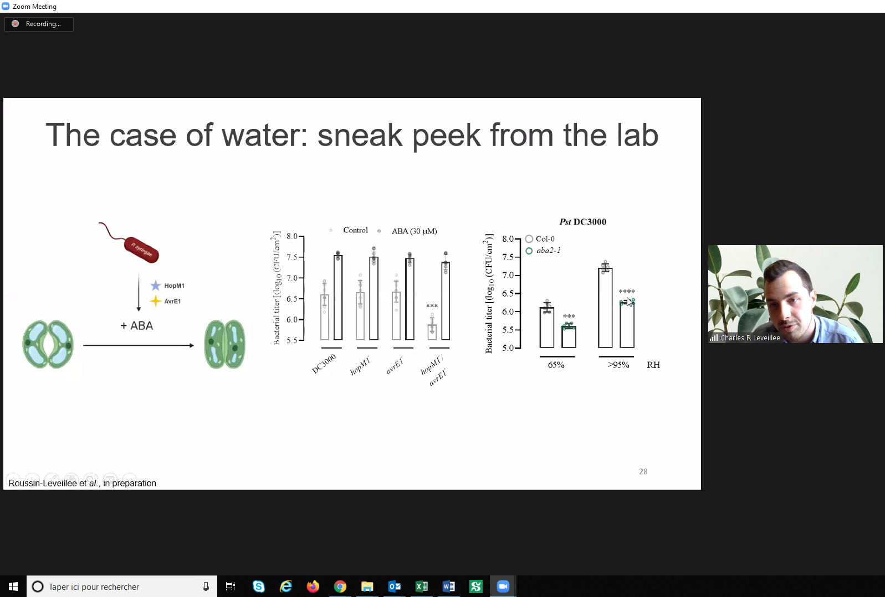
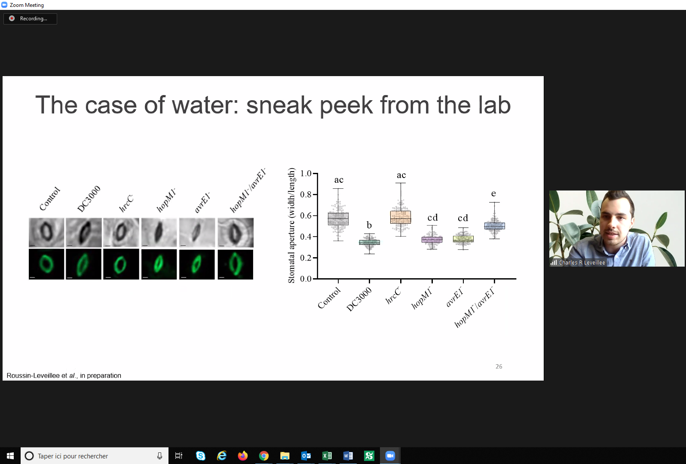
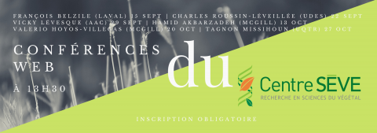
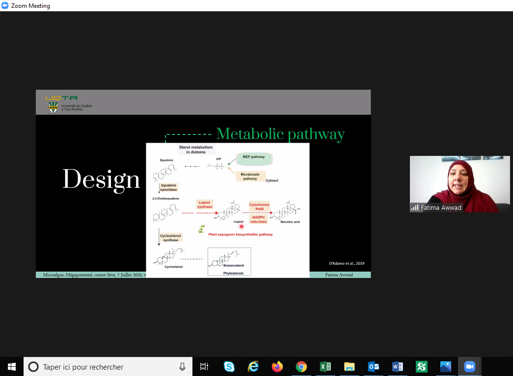
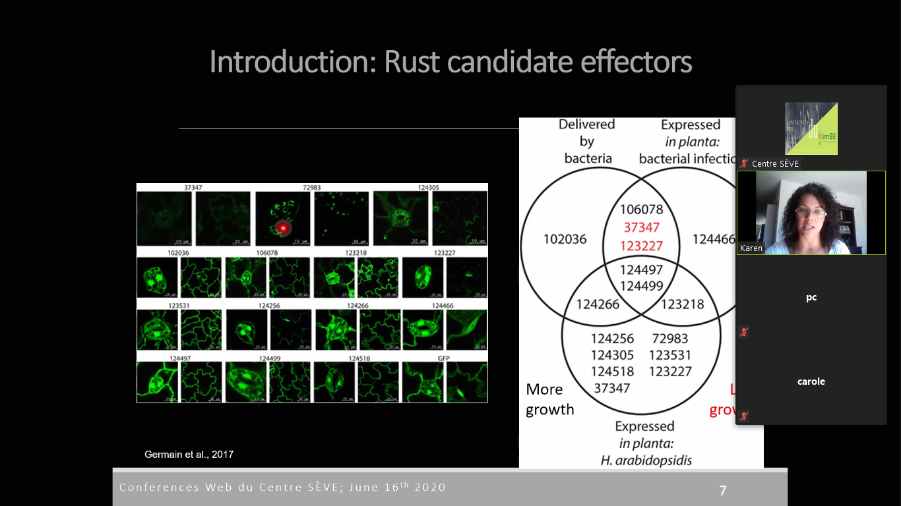

2020
2020-09-22


Conférence Web du Centre SÈVE aujourd’hui, avec Charles Roussin-Léveillée de l’Université de Sherbrooke. Merci à tous les participants!
Source: Centre SÈVE
2020-08-17
Vous souhaitez en savoir plus sur notre invitée Isabelle Laforest-Lapointe, de l’USherbrooke pour le 25 août?
Lisez cet article sur son travail !!
2020-08-14
Vous souhaitez en savoir plus sur notre invitée Leena Tripathi pour le 25 août?
Regardez cette vidéo de IITA CGIAR sur son travail !!
2020-08-10
Le Centre SÈVE annonce une nouvelle série de Conferences web qui commence le 15 septembre!

| 15 Septembre | François Belzile | Aventures dans l’univers des SNP : un premier bilan de SoyaGen, un projet de grande envergure en génomique du soya |
| 22 Septembre | Charles Roussin-Léveillée | The Apoplastic Battleground in Plant-Pathogen Interactions |
| 29 Septembre | Vicky Lévesque | L’amendement en biochar: Une approche durable pour améliorer la santé du sol et la croissance de la plante en horticulture |
| 13 Octobre | Hamid Akbarzadeh | Sustainable Bio-inspired Metamaterials |
| 20 Octobre | Valerio Hoyos-Villegas | The McGill Field Phenomics Platform: Increasing Resolution for Complex Trait Improvement |
| 27 Octobre | Tagnon Missihoun |
2020-07-29
Felicitations aux etudiants du Centre SEVE qui presentent dans le Worldwide Plant Biology Summit 2020.
Vous pouvez voir leurs affiches sur notre twitter (link en bas).
Amir Bidhendi, Francisco Campos, Gaële Lajeunesse, and Julian Henao-Martinez
Adrien Fremont, Charles Roussin-Léveillée, Eszter Sas and Guilherme Silva-Martins
| IRBV | McGill University | Université de Laval | Université de Montréal | Université de Sherbrooke |
|---|---|---|---|---|
| Camille Auger | Amir Bidhendi | Francisco Campos | Eszter Sas | Charles Roussin-Léveillée |
| Adrien Fremont | Karuna Kapoor | Gaële Lajeunesse | ||
| Meha Sharma | Guilherme Silva-Martins | |||
| Julian Henao-Martinez | Iauhenia Isayenka |
2020-07-07

Fatima Awwad, postdoc de l’UQTR, nous a presenté aujourd’hui le potentiel des microalgues dans les conférences Web du Centre SÈVE. Merci à tous les participants!
Source: Centre SEVE
2020-06-16

Une autre captivante conférence Web du Centre SÈVE aujourd’hui, avec Karen Cristine Gonçalves Dos Santos de l’UQTR. Merci à tous les participants!
Source: Centre SEVE
2020-05-09
Bienvenue à Maribel Diaz et Vincent Charron-Lamoureux à l’administration du CPICS à titre de secrétaire en remplacement de Alexia Bertholon, qui dû se retirer du comité.
Félicitation à vous deux !
2020-03-02
Félicitations à Claire Letanneur, doctorante à l’UQTR, pour l’octroi d’une subvention au premier concours du programme DIALOGUE - volet relève étudiante! Seulement quatre projets étaient sélectionnés pour chaque secteur de recherche des FRQ.
2019
2019-09-30
Nous rémercions Rose-Marie Bell, étudiante à la maitrise en biologie vegetale à l’Université Laval, pour avoir partagé son experience au SYMPOSIUM INTERNATIONAL DU CENTRE SÈVE 2019 dans le journal étudiant L’Agral.
OGM, tabou démystifié : topo sur le symposium international annuel du centre SÈVE
2019-08-29
Quelques souvenirs du SYMPOSIUM INTERNATIONAL DU CENTRE SÈVE 2019
Département de biologie - Université de Sherbrooke
Une soixantaine de participant(e)s et de conférencier(ière)s ont pu partager leurs connaissances, échanger et tisser des liens sur le thème de « La biotechnologie au service de la sécurité alimentaire ».
Objectif atteint pour ce premier symposium organisé par les étudiants du CPICS !
Merci encore une fois aux commanditaires de l’événement :
2019-06-11
Les inscriptions, pour la première édition du Symposium International du Centre SÈVE qui aura lieu le 23 août prochain, sont maintenant ouvertes!
Les étudiants ont la possibilité de soumettre un résumé afin d’être sélectionnés pour une présentation orale.
Voici les informations à savoir:
La date limite pour soumettre un résumé est le lundi 22 juillet.
Le résumé doit être d’un maximum de 200 mots.
Il devra être envoyé à l’adresse: cpicseve@gmail.com, en mettant en cc. chantal.binda@usherbrooke.ca et mina.zitouni@usherbrooke.ca.
La durée prévue par présentation est de 10 minutes, suivi de 5 minutes de questions.
Compte tenu de la portée internationale du symposium, l’anglais sera priorisé comme langue de présentation et de soumission des résumés. Cependant le français sera aussi accepté.
La décision prise par le Comité sera communiquée à chaque auteur au plus tard le lundi 2 août 2019.
Pour vous inscrire, rendez-vous sur le site web du Centre SÈVE.
Vous y trouverez aussi le planning de la journée et bien plus, alors ne tardez plus.
Nous avons hâte de vous y voir.
2019-03-14
Après une longue période d’attente, nous avons enfin le plaisir de vous présenter le Comité de Partenariat du Centre SÈVE (CPICS). Comme vous le savez nous aspirons à l’établissement de partenariats avec des chercheurs du monde entier. Nous sommes d’ailleurs en pleine préparation du premier Symposium International du Centre SÈVE qui portera cette année sur « La biotechnologie au service de la sécurité alimentaire ».
Restez à l’affût pour plus d’informations sur le symposium, mais aussi pour en savoir plus sur les recherches menées au sein du Centre SÈVE ainsi qu’à l’extérieur du Québec et d’autre nouvelles palpitantes dans le monde de la science.
En attendant nous vous laissons avec cette belle photo qui liste tous les membres du bureau exécutif du CPICS de cette année.